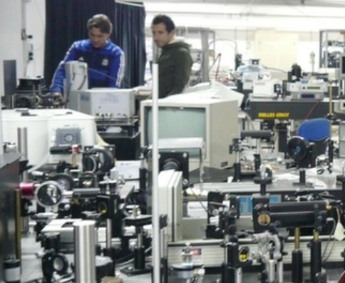
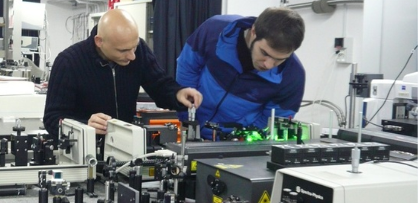

  <div class="section no-pad-bot" id="index-banner">
    <div class="container">
	<h6>Research area</h6>
      <div class="row">
        <h6 class="header col s12 light">
		We are a young research group interested in non-linear and quantum phenomena of Bose Einstein condensates 
		of very lite quasi-particles called polaritons. We study the dynamics of quantum fluids, correlations, 
		and many aspects of the interaction between matter and light from the macroscopic to the microscopic scale.
		</h6>
      </div>
	  
	  
	  <h6>Organisation</h6>
      <div class="row">
        <h6 class="header col s12 light">
		The experimental team is in charge of a fully equipped laboratory for Advanced Photonics 
		at the newly founded Nanotechnology Institute of CNR. 
		The group has also access to many, in-situ, state of the art facilities for growing 
		and processing inorganic, organic and molecular semiconductors.
		</h6>
      </div>
	  
	  
	  <h6>Philosophy</h6>
      <div class="row">
        <h6 class="header col s12 light">
		Our team is made of people who believe in free research and free thinking. 
		We dislike the military structure which often emerges even in those groups 
		who suggest to be working in an informal environment. 
		We strongly encourage the participation of all members in every 
		aspect of the research activities sharing the same passion 
		and cooperation to succeed working with fun making interesting and innovative explorations. 
		Research is based on ideas and imagination… any effort to control them is boycotting science at large.
		</h6>
      </div>
	  <div class="row">
        <h6 class="col">
		
	  </h6>
	   <h6 class="col">
		
	  </h6>
    </div>
  </div>
